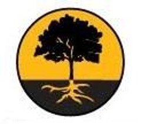

Grassroots.org

Website:
http://grassroots.org Location:
New York, NY
The mission of Grassroots.org is to serve as a catalyst for positive social change by leveraging modern technologies and best business practices. Grassroots.org provides nonprofit organizations with free valuable technologies and resources to increase their efficiency and productivity. We focus on nonprofits by offering free technology and business services available through our Nonprofit Toolbox. We currently serve over 1,300 nonprofits in the US and Canada!
Project Description:
As Grassroots.org continues to expand our membership base (from 680 to 1,200 members in the last year) and our service offerings, it is extremely important for us to have comprehensive support for our tools, and through site content, communicate with current and potential members/volunteers/donors. The sustainable projects that our current VISTAs completed have been immensely important to Grassroots.org and our goal now is to build upon their proven successes/failures and keep things going in a forward motion. Our team would enjoy sharing another year of important growth with new CTC VISTA members.
The project of VISTA 1 (build marketing/member recruitment and online fundraising campaigns) will inform more nonprofits about Grassroots.org and expand our client base, increasing the number of people we serve. In Phase 1 of the project (current VISTA), Grassroots.org began a campaign to reach out through many social networking sites and create monthly press releases. Findings were that neither of these methods brought in significant members. What did attract major traffic to our site was free online advertising Grassroots.org received in addition to outreach to bloggers. In Phase 2, a Grassroots.org VISTA would build upon what we have found will achieve success: focusing on membership by reaching out to umbrella organizations, continuing to network with bloggers, and pinpointing the social networking sites best suited to Grassroots.org.
Our second project (VISTA 2) is to build support resources and strengthen capacity of sub domain web content. In Phase 1 of the project (current VISTA), we created a support system (help guides, webinar series) for 4 of our tools/services (help.grassroots.org). These comprehensive guides have helped Grassroots.org immensely in reducing staff time spent on member support. However, Grassroots.org has a growing number of clients needing support, and a large amount of daily staff time is still devoted to support.
* How you determined the need for this project
We determined the need for the marketing/member recruitment project (VISTA 1) based on the positive reaction Grassroots.org received from publicity on Reddit.com, Mashable.com, The MIVA Ad Network and Monster.com at the end of 2008. Being featured on all of these websites generated significant traffic to Grassroots.org and both our membership and new volunteers increased as a result. Knowing what a little publicity can do for a nonprofit like Grassroots.org made it clear that a stronger online marketing and member recruitment campaign will be essential to us.
In response to our rapid membership growth, we saw a rise in the demand for new products and services and realized the need for support tools for our other 3 existing services as well as the importance of support for new services as they are added (VISTA 2). We determined this need through feedback from Grassroots.org’s most recent member survey conducted by VISTAs and staff in October 2008. In addition, we interviewed key stakeholders: board members, volunteers and members and found that a need for better support was mentioned frequently.
* Why this project is timely
This project is timely in two distinct ways. First, focusing again on our increased membership and our members’ desire for additional products, we realized the extreme importance of automating as many processes as possible to reduce time spent working with each individual member. In addition, the project is timely because developing broad and inclusive online support tools takes only one person (VISTA 2) to implement, but will free-up this valuable staff time.
* How the project would increase community engagement
This project will increase engagement among the Grassroots.org community because if nonprofits know how to use the free tools offered to them, their experience with Grassroots.org is influenced for good and members are more likely to take part in viral marketing and spreading the word about Grassroots.org’s services. In addition, by introducing more interactive content on our website, the likelihood that members will come to our websites and engage with us increases. Through our current relationship with the former Director of Community Development for Red Hat, we realized the need for a VISTA to determine which social networking tools are most appropriate and effective for Grassroots.org to increase our community engagement.
* How the project relates to other activities or elements of your organization or community
This project is the result of lessons learned from Phase 1 of the project. What the project will do is develop support for a new set of programs and services that can then be integrated into the overall organization which will allow Grassroots.org to grow in an organic and sustainable way.
Project Tangibles:
The nature of our mission is to provide other nonprofits with free technology and capacity building tools. Therefore, other organizations will directly benefit from valuable nonprofit technology and resources that the VISTAs have helped develop. Ultimately, the tools provided by Grassroots.org could be used by others in the field completing their projects. Previous CTC VISTAs have used our services to create and build a website for their organizations, thus increasing capacity and fulfilling their own project plans.
Tangible products that could be shared from the project include the media/online fundraising plan developed by VISTA 1 and support/web content plan developed by VISTA 2. Since VISTA 1 would be instrumental in finding funding for Grassroots.org, submitted grant proposals could be shared and used as a guideline for other VISTAS and nonprofits in the field.
Supported Projects
Web Projects Coordinator
Scott D'Antuono
9/2009 — 9/2010
In response to our rapid membership growth, we saw a rise in the demand for new products and services and realized the need for support tools for our other 3 existing services as well as the importance of support for new services as they are added. Our VISTA will build support resources and strengthen capacity of sub domain web content.
-Build comprehensive online training and support resources for remaining 3 applications in Toolbox and new applications as they are added to the Toolbox. Ensure that applications are fully sustainable & documented, saving staff time while helping smaller nonprofits make use of the Toolbox.
- Strengthen the capacity of Grassroots.org’s sub domain website content to serve nonprofits, recruit new members, and generate needed attention from nonprofits, volunteers, donors and partners.
-Manage Grassroots.org’s newsletters, recruit members/partners to publish entries for Grassroots.org blog
Scott created help guides, Webinars and supplemental materials to make the Grassroots.org Toolbox experience seamless for al Grassroots.org members. Scott took over the management of our NING social networking site in addition to streamlining our SEO consulting program and making the application process for the Social Venture Consulting program more efficient. Scott authored an extensive amount of content on our blog, such as the “Tool of the Week” series and our “Faces of Change” video series. In addition, Scott created estore.grassroots.org (a promotional products website resulting in 4% donations for Grassroots.org) and was an essential force in creating Interns.org on Wordpress. Scott’s positive, can-do attitude enabled him to complete every project he was asked to complete.
Scott ended up developing our NING Community Networking site. Scott fully took over this project from the design to the moderation of the site. Scott also took on the role of reaching out face-to-face with our local members, something he had a personal interest in and showed initiative in doing. In addition to promoting Grassroots.org through attending “GrassrootsCamp” NY Tech Meetup events, Scott got involved in the projects of our member orgs. For example, Scott volunteered his time to sketch/design a handbook for Grassroots.org member “Getting Tools to City Schools” and their sustainable binder project. Scott is a true joy to have in the office and his greatest accomplishment in my opinion is his positive contribution to morale.
Scott was able to accomplish every task that we gave him. Scott was very responsible about asking for help when he needed it and seeking out the tools he needed to complete tasks. It was a pleasure working with him throughout the year and in fact, we hired him at the end of his VISTA term.
Marketing and Outreach
Molly Fergus
9/2009 — 5/2010
We determined the need for the marketing/member recruitment project based on the positive reaction Grassroots.org received from publicity on Reddit.com, Mashable.com, The MIVA Ad Network and Monster.com at the end of 2008. Being featured on all of these websites generated significant traffic to Grassroots.org and both our membership and new volunteers increased as a result. Knowing what a little publicity can do for a nonprofit like Grassroots.org made it clear that a stronger online marketing and member recruitment campaign will be essential to us.
The VISTA will inform more nonprofits about Grassroots.org and expand our client base, increasing the number of people we serve. Last year Grassroots.org began a campaign to reach out through many social networking sites and create monthly press releases. Findings were that neither of these methods brought in significant members. What did attract major traffic to our site was free online advertising Grassroots.org received in addition to outreach to bloggers. This year a Grassroots.org VISTA would build upon what we have found will achieve success: focusing on membership by reaching out to umbrella organizations, continuing to network with bloggers, and pinpointing the social networking sites best suited to Grassroots.org.
Working in cooperation with the Executive Director and Director of Outreach & Development, the Communications Coordinator responsibilities would be to:
-Develop, plan and execute an online fundraising campaign, reach out to potential partners
-Develop and execute a strategic marketing/member recruitment campaign. The marketing/member recruitment campaign will allow us to reach as many potential nonprofit organizations as possible, increasing our capacity to serve. In addition, the campaign will increase our financial capacity as an organization as warranted attention attracts the attention of potential donor and partner organizations.
Shortly after coming to Grassroots.org, Molly created a Public Relations/Marketing plan for us and has been implementing the plan for the past 3 months. Molly created a format for writing and sending out press releases and created a network for us to distribute our media materials to (including local news outlets and nonprofit technology blogs). She launched our first public relations campaign, which landed coverage in PC Magazine, Ode Magazine and the Philanthropy Journal. Molly regularly edits and contributes to the Grassroots.org website, notably our press page and frequent blog posts. Molly has been instrumental in engaging our nonprofit membership by recruiting members to contribute to the newsletter, annual report and blog.
Molly has accomplished an incredible amount for us in the past 6 months and has been a wonderful addition to Grassroots.org. Molly’s press efforts have undoubtedly played a large part of the huge membership growth Grassroots experienced in the last year. In addition to helping us gain new members, Molly has also reengaged older members by reaching out to them for blog contributions. These engagement efforts are so important to us because the best way for us to gain new members is my word of mouth. So far, Molly has launched a “Member of the Month” series that allows us to feature one Grassroots member every month and give our other members advice on what makes a good nonprofit website. The monthly release has been standardized and will be very easy to continue to publish for other staff. In addition, Molly created our “Tool of the week” series. This feature presents reviews from Grassroots.org staff of technology tools that we think would benefit our members. This series has been extremely popular. Molly not only created the format for the series, but also came up with an extensive list of tools that we will be able to continue to feature on a weekly basis.
In addition to the annual report (which came about because Molly was self-motivated and thought that it would benefit our organization immensely), Molly has greatly extended the reach of our organization through her work in developing our social networking reach; namely our Twitter account. Although we had a Twitter account that was managed by me (Laura Benack) when Molly came on board, she completely changed the way we were using this outlet. In addition to getting all recent Grassroots.org news pushed out on Twitter, Molly also started to thoughtfully share useful articles and resources with our Twitter followers and interacting daily with other users in the nonprofit and technology fields. Molly has grown our follower list to just under 3,000 in just a few months. We will now be able to leverage this community of followers in the future and continue her methods of Twitter engagement.
New Media Coordinator
Alice Luu
7/2008 — 7/2009
he New Media Coordinator Position is a one-year full time paid Americorps*VISTA position (see compensation details below).
• Interview program clients and write compelling success stories for Grassroots.org print and web communications.
• Manage relationship with PR Firm, including telephone interviews for Press Releases
• Assist in the execution and growth of electronic media
• Create web traffic reports, manage website content updates
• Copy, Edit, Proofread and assist with writing of all print and electronic media (includes fundraising collateral, client-outreach publications, donor communication etc).
• Identify and implement technology solutions to realize strategic organizational and programmatic goals
• Assist in the creation and design of subsites for Grassroots.org (such as client help site, portal sites)
We were able to achieve most of our significant goals, and also to complete additional items not on the original work plan.
Four Grassroots.org tools are now fully documented with help guides and easy-to-understand information for our membership, which will be valuable as we increase our member base. Our blog content helps convert visitors to members, and there is now a framework for our blog. The positive testimonials will help boost membership and funding prospects. We have also opened up our blog for members and supporters to post their testimonials. Please find it here: http://www.grassroots.org/blog Grassroots.org now has a newsletter template ready to be used monthly. Our e-mail list has grown from 600 to 8000+ contacts, and our monthly content has produced a loyal group of readers. (We currently sustained less than 1% unsubscribe rate). Alice developed seven significant programmatic partnerships, which resulted in on going referrals for membership at Grassroots.org. The partners include some of the best nonprofit umbrella organizations in the country. For a full list please go here: http://www.grassroots.org/support/program-partners Developed a you tube channel site, include new overview videos for potential members and potential donors. Please go here to see: http://www.youtube.com/user/GrassrootsDotOrg Developed an earned media outreach plan, which resulted in multiple significant media mentions. This included ABCnews.com, PC world, Tech Soup, and the Chronicle of Philanthropy. Please see our media page for more info: http://www.grassroots.org/news We have grown our membership from 680 members to over 2,000. We have increased the rate of usage for our tools. In previous years, we averaged about $200,000 in free services being given away. In the past year we have given away over $2 million in services.
“Alice did an amazing job. So much so that we hired her as a full time staff person to continue the projects she started and work on new initiatives.”
- Shanke Hankins, supervisor
Consituent Coordinator
Laura Benack
7/2008 — 7/2009
The Constituent Coordinator Position is a one-year full time paid Americorps*VISTA position (see compensation details below).
• Draft content for marketing and communications materials, including website, electronic newsletter and printed collateral
• Provide outstanding customer service to both internal and external constituent groups members
• Update and maintain member and donor databases
• Build and maintain partnerships with for- and nonprofit partners and community groups
• Assist executive staff in design and implementation of strategic outreach initiatives
• Participate in special projects as needed
Laura developed a grant narrative for Monster.com for Grassroots.org’s volunteer program. This comprehensive document will be very useful in the development of future proposals. She also developed a needs statement (a crucial development document the organization was lacking) that was submitted along with five proposals this year and will be submitted along with all future grant proposals.
She helped to create and then managed Grassroots.org’s volunteer graphic design program. In five months, there were more than 20 graphic design projects completed: http://volunteer.grassroots.org/image/tid/2.
Laura built upon upon Grassroots.org’s community of web design volunteers from 90 to over 400 through social networking and volunteer requests on Craigslist, SmartVolunteer and Volunteer Match. Laura documented the process, which could be replicated by another staff member.
She developed web content and mailings for Holiday Giving Campaign, which can be publicized annually: http://www.grassroots.org/holidaygiving Helped grow the individual giving program, including handling administrative tasks associated.
Laura assisted in acquiring and managing a grant from google.com for $10,000/ month in ad words. She helped to develop and implement four significant new program service offerings. Helped reestablish our facebook presence and create a new twitter presence. We grew from 0 to 2,160 twitter followers in four months. We have grown our membership from 680 members to over 2,000. We have increased the rate of usage for our tools. In previous years, we averaged about $200,000 in free services being given away. In the past year we have given away over $2 million. We have grown our membership from 680 members to over 2,000. We have increased the rate of usage for our tools. In previous years, we averaged about $200,000 in free services being given away. In the past year we have given away over $2 million.
“Laura did an amazing job! In fact, we hired her as a full time staff person after her term of service ended.”
- Shane Hankins, supervisor
Web Projects Coordinator
Karl Otto
6/2007 — 8/2008
The mission of Grassroots.org is to serve as a catalyst for positive social change by leveraging modern technologies and business best practices. Grassroots.org spreads important social information via our network of socially-focused web sites, while also providing non-profit organizations with free valuable resources to increase their efficiency and productivity.
Working in cooperation with the Grassroots.org Director of Programs and IT Architect, the Web Projects Coordinator will:
-Build a comprehensive resource directory to support
applications embedded in the Grassroots.org Toolbox. The resource directory will ensure that applications are fully supported & documented, saving staff time while helping smaller and less-tech savvy nonprofits make use of the Toolbox.
-Strengthen the capacity of Grassroots.org Toolbox’s Drupal Installations to serve the needs of member nonprofits.
Karl began his year by undertaking research to add to his own and the organization’s web development knowledge. Within the first two weeks, he learned HTML, CSS, and a smattering of Drupal.
He contributed to a 15 page report on Net Nanny software before beginning work on his first website project: a redesign for the NYC-based nonprofit Concrete Safaris.
He helped reorganize the CMS (Content Management System) for our main site. Shortly thereafter, Karl picked up the regular responsibility of providing client intake for our programs and developing content for our new website.
The departure of Karl’s supervisor in October called for the restructuration of his duties. As a result, Karl has begun playing the role of the bug-fixer for the new website, which has given him victories such as modifying his first PHP doc to quandaries such as being expected to modify an RSS feed in that same doc. Karl also started working from home.
Karl was supposed to speak at a conference in Ocean City, MD about free and low-cost tools for nonprofits, but due to inclement weather in Chicago, he was unable to make his flight. In March, Karl attended the NTEN conference in New Orleans.
Overall, Karl availed himself of the Digital Arts Service Corps network by getting help finding resources regarding website accessibility and learning Javascript. With his help, we will be able to make our website available users with disabilities.
Communications Coordinator
Ashley Matthews
6/2007 — 6/2008
The mission of Grassroots.org is to serve as a catalyst for positive social change by leveraging modern technologies and business best practices. Grassroots.org spreads important social information via our network of socially-focused web sites, while also providing non-profit organizations with free valuable resources to increase their efficiency and productivity.
Working in cooperation with the Executive Director and Director of Outreach & Development, the Communications Coordinator will:
- Strengthen the capacity of Grassroots.org’s website to serve nonprofits, recruit new members, and generate needed attention from media outlets, donors and partners.
-Develop and execute a strategic Media Presence campaign. The Media Presence campaign will ensure that news about Grassroots.org’s services reach as many potential nonprofit organizations as possible, increasing our capacity to serve organizations (and by proxy, individuals). In addition, the Media Presence campaign will increase our financial capacity as an organization as warranted attention attracts the attention of potential donor and partner organizations.
- Develop high-profile portal sites, cooperating with partners to ensure the sites serve as premier destinations for information and interactive content. Potential portals to be developed include homeless.org, crime.org, nonprofitmanagement.org, earthday.org and others.
Ahsley began her service by taking part in a staff retereat in Columbus, Oh which was very helpful for team building. She was able to meet all of the people who make it possible for Grassroots to be successful and prepared her for our fundraising event in LA the following spring.
Shortly thereafter she began developing the domain Crime.org, one of the portal sites we had in mind. She scouted the field for partners that would help provide content to the website. She has recruited a number of local Professors of criminal justice for this purpose.
From July 26-28, Ashley attended the Non Profit 2020 I will be attending the NP2020: “Giving Emerging Leaders a Voice in the Nonprofit Community” in Grand Rapids, MI, for which she had received a scholarship to attend. She was able to get the people she met interested in the potential web-based programs such as egroupware and Salesforce to help their nonprofits.
http://nonprofit2020.wordpress.com/
http://np2020.wikispaces.com/.
Ashley helped us prepare for a fundraising event that took place in Seattle on August 13, 2007. She learned what goes into making such an event successful, such as creating a theme compatible with the invitations and organizing a budget. She performed public-relations functions such as preparing advertising and outreach materials.
Due to a critical blood shortage in central Ohio, Ashley represented Grassroots.org in their efforts to help recruit donors to the blood drive on October 11, 2007. I am in the process of coordinating a blood drive with the Red Cross, which will be held on October, 11. She established relationships with local businesses. She also strengthened our relationship with Strongtech, with whom we share office space, by inspiring them to recruit donors as well.
In the months following the drive, Ashley continued her web development work while helping staff market some of its new programs, such as its MBA Mentor program, which pairs Grassroots members with MBA students from the University of Maryland to provide free marketing consulting, and the Social Venture Consulting program which will begin spring 2008.
Ashley attended the She’s Geeky conference in Mountain View, CA. The conference was for women working in the field of technology. She network with people outside of the nonprofit tech world such as google reps, yahoo reps, and AOL reps. She was able to participate in a free public speaking training from an acting and speech prof. from UC Berkley.
Beginning in January 2008, Ashley isolated a number of Foundations that fund national open source technology projects. Because Grassroots works at the national level, it is often difficult to find funders who match our profile.
Ashley updated our constituent database using Salesforce’s nonprofit edition. She also attended the NTC conference March 19-21 in New Orleans, where she joined sessions about database management and how to use them effectively.